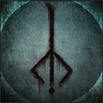
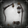
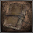

About
Bloodborne
Collectible Checklist

SAVE
LOAD
Central Yharnam
Hunter's Dream
Notebook
1st Floor Sickroom
Iosefka's Blood Vial
Central Yharnam
Torch
Hunter Set
Hunter's Dream
Beckoning Bell
Silencing Blank
Old Hunter Bell
Central Yharnam
Shake of Cape | Talk | Eileen
Saw Spear
Formless Oedon I #1 | Find Girl's Mother | Young Yharnam Girl
Saw Hunter Badge
Tomb of Oedon
Red Jeweled Brooch
Blood Gem Workshop Tool | Chest
Central Yharnam
Formless Oedon I #2 | Do Not Give & Tell of Iosefka's Clinic | Young Yharnam Girl
Sword Hunter Badge | Defeat | Cleric Beast
Cathedral Ward I
Cathedral Ward
Nothing | Talk | Chapel Dweller
Triumph #1 | Tell of Oedon Chapel | Lonely Old Dear
Triumph #2 | Talk | Oedon Chapel Dweller
Wooden Shield
Hunter Set
Monocular
Pray | Co-operate | Alfred, Hunter of Vilebloods
Old Yharnam
Old Yharnam
Hunter's Torch
Bloody Messenger Head Bandage
Rifle Spear
Charred Hunter Set
Pthumeru Chalice | Defeat | Blood-Starved Beast
Healing Church Workshop
Cathedral Ward
Formless Oedon IV | Chest
Messenger Urn Festival
Communion I | Chest
Radiant Sword Hunter Badge
Messenger Top Hat
Abandoned Old Workshop
Doll Set
Old Hunter Bone
Third Umbilical Cord #1
Small Hair Ornament
Beast I | Defeat | Beast-Possessed Soul
Rumpled Set
Cathedral Ward
Black Messenger Hat
Hunter's Dream
Tear Stone | Give Small Hair Ornament | Doll
Cathedral Ward II
Cathedral Ward
Shh! | Talk | Eileen the Crow
Heir I | Defeat | Old Hunter Henryk
Approval | Talk | Eileen the Crow
Third Umbilical Cord #1 | Tell of Oedon Chapel | Arianna, Woman of Pleasure
Black Church Set
Curtsy | Talk | Arianna, Woman of Pleasure
Hemwick Charnel Lane
Hemwick Charnel Lane
Lake I
Witch's Abode
Rune Workshop Tool
Cathedral Ward III
Cathedral Ward
Gold Pendant | Defeat | Vicar Amelia
Checkpoint! Interact with Laurence's Skull
Hunter's Dream
Eye of a Blood-Drunk Hunter
Forbidden Woods
Forbidden Woods
White Church Set
Beast Roar
Iosefka's Clinic
Formless Oedon I | Defeat | Celestial Emissary
Communion III | Chest
Oedon Writhe II | Defeat | Impostor Iosefka
Forbidden Woods
Beast II #1 | Tell of Oedon Chapel | Afflicted Beggar
Cannon
Impurity | Join the League | Valtr, Master of the League
One-Eyed Iron Helm | Defeat | Valtr, Master of the League
Madara's Whistle | Defeat | Younger Madaras Twin
Deep Sea II
Clear Deep Sea I
Graveguard Mask
Graveguard Set
Anti-Clockwise Metamorphosis I
Dissipating Lake I
Clockwise Metamorphosis
Blood Rapture I | Defeat | Shadows of Yharnam
Hypogean Gaol
Hypogean Gaol
Oedon Writhe I #1 | Equip Black Church Set & Tell of Oedon Chapel | Adella, Nun of the Healing Church
Moon I
Yahar'gul Set
Spark Hunter Badge | Kill Darkbeast Paarl
Graveyard of the Darkbeast
Powder Keg Hunter Badge & Brush Off Dust | Spare beasts of Old Yharnam | Retired Hunter Djura
Ashen Hunter Set (Insight Shop) | Kill | Retired Hunter Djura
Cathedral Ward
Church Bow (Female) | Talk | Adella, Nun of the Healing Church
Nightmare Frontier
Lecture Building - First Floor
Student Set
Augur of Ebrietas | Chest
Nightmare Frontier
Clockwise Metamorphosis II
Stunning Deep Sea II
Fading Lake I
Clear Deep Sea II
Great Deep Sea II
Messenger's Gift
Ailing Loran Chalice | Defeat | Amygdala
Cathedral Ward - Oedon Chapel
Oedon Writhe I
Formless Oedon III
Beast II | Kill | Afflicted Beggar
Byrgenwerth
Byrgenwerth
Arcane Lake II
Student Set | Chest
Empty Phantasm Shell | Chest
Eye II | Defeat | Master Willem
Checkpoint ! Approach Yharnam, Pthumerian Queen
Forsaken Castle Cainhurst
Forsaken Castle Cainhurst
Reiterpallasch | Chest
Noble Dress | Chest
Executioner Set
Vileblood Register
Evelyn | Chest
Executioner's Gloves | Chest
Knight's Set | Chest
Knight's Wig
Crown of Illusions | KIll | Martyr Logarius
Vileblood Queen's Chamber
Corruption & Cainhurst Badge | Swear Oath to the Vilebloods | Annalise, Queen of the Vilebloods
Note: Equip Corruption Oath Rune
Unopened Summons
Cathedral Ward
Wheel Hunter Badge & Church Bow (Male) | Give Unopened Summons | Alfred, Hunter of Vilebloods
Vileblood Queen's Chamber
Roar | Talk | Alfred, Hunter of Vilebloods
Cathedral Ward
Radiance
Yahar'gul Unseen Village
Yahar'gul Unseen Village
Iron Yahar'gul Helm
Heir II
Tiny Tonitrus | Chest
Yahar'gul Chapel
Clawmark I | Defeat | Yahar'gul Hunter
Arcane Lake I
Central Yharnam
Clawmark II | Defeat | Gilbert, Critically Ill Man
Upper Cathedral Ward
Upper Cathedral Ward
Great Lake II
Choir Set
Blindfold Cap
Make Contact
Cosmic Eye Watcher Badge
Communion IV | Defeat | Celestial Emissary
Lumenflower Gardens
A Call Beyond
Great Isz Chalice | Defeat | Ebrietas, Daughter of the Cosmos
Vileblood Queen's Chamber
Deep Respect | Offer Blood Dreg | Annalise, Queen of the Vilebloods
Nightmare of Mensis
Lecture Building 2nd Floor
Beg for Life | Not at All | Patches the Spider
Anti-Clockwise Metamorphosis II | Talk | Patches the Spider
Communion | Chest
Mergo's Loft - Base
Eye I
Iron Door Key
Moon II
Mensis Cage
Cathedral Ward
Arianna's Shoes | Defeat | Arianna, Woman of Pleasure
Third Umbilical Cord | Defeat | Celestial Child
Mergo's Loft - Middle
Choir Bell | Chest
Blood Rock
Moon III | Make Contact | Brain of Mensis
Third Umbilical Cord | Defeat | Mergo's Wet Nurse
Grand Cathedral
Wait | Talk | Eileen the Crow
Blood Rapture III | Defeat | Bloody Crow of Cainhurst
Hunter & Crow Hunter Badge | Talk | Eileen
Hunter's Dream
Hunter's Dream
Old Hunter Badge | Defeat | Gehrman, The First Hunter